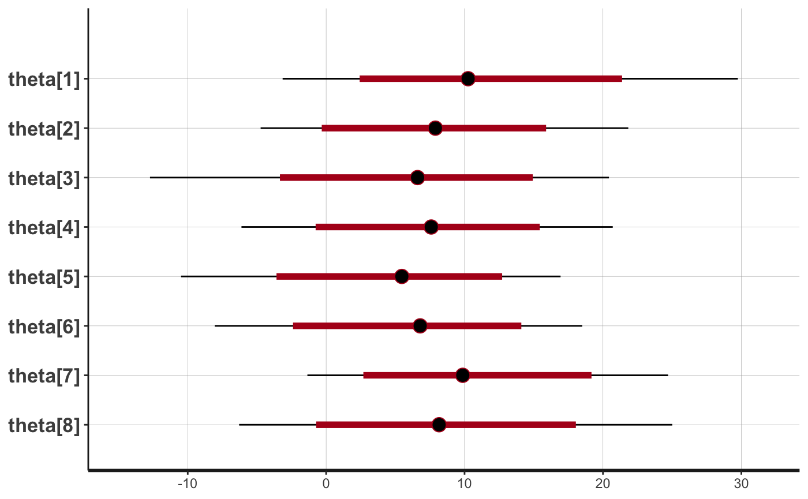
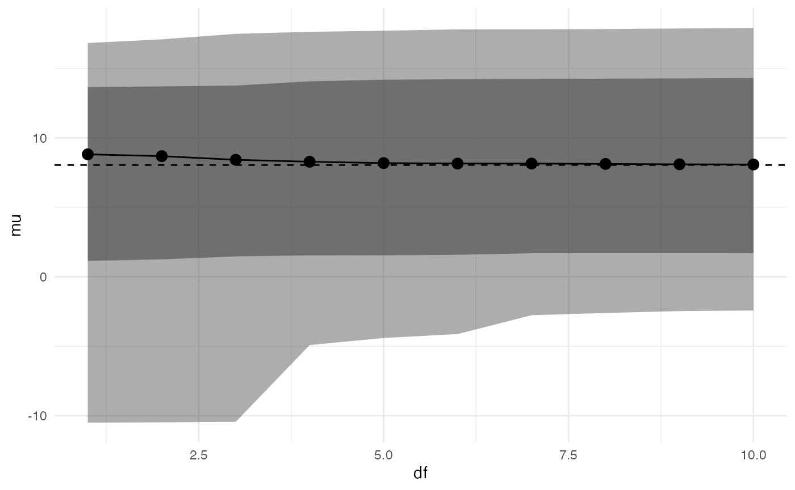
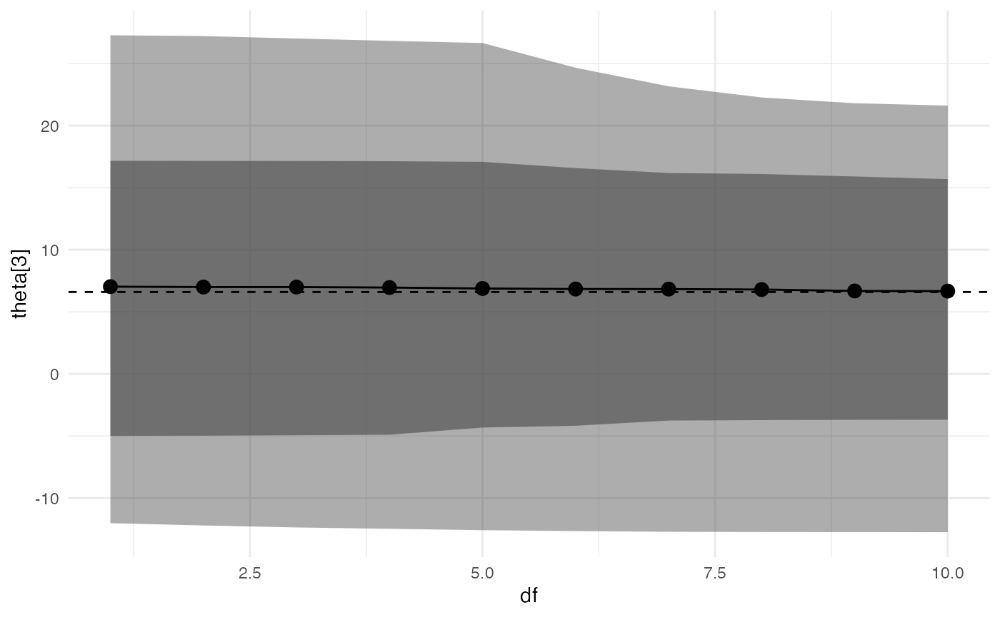

eight-schools.RmdThis vignette walks through the process of performing sensitivity analysis using the adjustr package for the classic introductory hierarchical model: the “eight schools” meta-analysis from Chapter 5 of Gelman et al. (2013).
We begin by specifying and fitting the model, which should be familiar to most users of Stan.
library(dplyr) library(rstan) library(adjustr) model_code = " data { int<lower=0> J; // number of schools real y[J]; // estimated treatment effects real<lower=0> sigma[J]; // standard error of effect estimates } parameters { real mu; // population treatment effect real<lower=0> tau; // standard deviation in treatment effects vector[J] eta; // unscaled deviation from mu by school } transformed parameters { vector[J] theta = mu + tau * eta; // school treatment effects } model { eta ~ std_normal(); y ~ normal(theta, sigma); }" model_d = list(J = 8, y = c(28, 8, -3, 7, -1, 1, 18, 12), sigma = c(15, 10, 16, 11, 9, 11, 10, 18)) eightschools_m = stan(model_code=model_code, chains=2, data=model_d, warmup=500, iter=1000)
We plot the original estimates for each of the eight schools.
plot(eightschools_m, pars="theta") #> ci_level: 0.8 (80% intervals) #> outer_level: 0.95 (95% intervals)

The model partially pools information, pulling the school-level treatment effects towards the overall mean.
It is natural to wonder how much these estimates depend on certain aspects of our model. The individual and school treatment effects are assumed to follow a normal distribution, and we have used a uniform prior on the population parameters mu and tau.
The basic adjustr workflow is as follows:
Use make_spec to specify the set of alternative model specifications you’d like to fit.
Use adjust_weights to calculate importance sampling weights which approximate the posterior of each alternative specification.
Use summarize and spec_plot to examine posterior quantities of interest for each alternative specification, in order to assess the sensitivity of the underlying model.
First suppose we want to examine the effect of our choice of uniform prior on mu and tau. We begin by specifying an alternative model in which these parameters have more informative priors. This just requires passing the make_spec function the new sampling statements we’d like to use. These replace any in the original model (mu and tau have implicit improper uniform priors, since the original model does not have any sampling statements for them).
spec = make_spec(mu ~ normal(0, 20), tau ~ exponential(5)) print(spec) #> Sampling specifications: #> mu ~ normal(0, 20) #> tau ~ exponential(5)
Then we compute importance sampling weights to approximate the posterior under this alternative model.
adjusted = adjust_weights(spec, eightschools_m)
The adjust_weights function returns a data frame containing a summary of the alternative model and a list-column named .weights containing the importance weights. The last row of the table by default corresponds to the original model specification. The table also includes the diagnostic Pareto k-value. When this value exceeds 0.7, importance sampling is unreliable, and by default adjust_weights discards weights with a Pareto k above 0.7.
print(adjusted) #> # A tibble: 2 x 4 #> .samp_1 .samp_2 .weights .pareto_k #> <chr> <chr> <list> <dbl> #> 1 mu ~ normal(0, 20) tau ~ exponential(5) <dbl [1,000]> 0.569 #> 2 <original model> <original model> <dbl [1,000]> -Inf
Finally, we can examine how these alternative priors have changed our posterior inference. We use summarize to calculate these under the alternative model.
summarize(adjusted, mean(mu), var(mu)) #> # A tibble: 2 x 6 #> .samp_1 .samp_2 .weights .pareto_k `mean(mu)` `var(mu)` #> <chr> <chr> <list> <dbl> <dbl> <dbl> #> 1 mu ~ normal(0, … tau ~ exponential… <dbl [1,00… 0.569 7.93 23.7 #> 2 <original model> <original model> <dbl [1,00… -Inf 7.98 26.7
We see that the more informative priors have pulled the posterior distribution of mu towards zero and made it less variable.
What if instead we are concerned about our distributional assumption on the school treatment effects? We could probe this assumption by fitting a series of models where eta had a Student’s t distribution, with varying degrees of freedom.
The make_spec function handles this easily.
spec = make_spec(eta ~ student_t(df, 0, 1), df=1:10) print(spec) #> Sampling specifications: #> eta ~ student_t(df, 0, 1) #> #> Specification parameters: #> df #> 1 #> 2 #> 3 #> 4 #> 5 #> 6 #> 7 #> 8 #> 9 #> 10
Notice how we have parameterized the alternative sampling statement with a variable df, and then provided the values df takes in another argument to make_spec.
As before, we compute importance sampling weights to approximate the posterior under these alternative models. Here, for the purposes of illustration, we are using keep_bad=T to compute weights even when the Pareto k diagnostic value is above 0.7. In practice, the alternative models should be completely re-fit in Stan.
adjusted = adjust_weights(spec, eightschools_m, keep_bad=T)
Now, adjusted has ten rows, one for each alternative model.
print(adjusted) #> # A tibble: 11 x 4 #> df .samp .weights .pareto_k #> <int> <chr> <list> <dbl> #> 1 1 eta ~ student_t(df, 0, 1) <dbl [1,000]> 1.02 #> 2 2 eta ~ student_t(df, 0, 1) <dbl [1,000]> 1.03 #> 3 3 eta ~ student_t(df, 0, 1) <dbl [1,000]> 0.915 #> 4 4 eta ~ student_t(df, 0, 1) <dbl [1,000]> 0.856 #> 5 5 eta ~ student_t(df, 0, 1) <dbl [1,000]> 0.826 #> 6 6 eta ~ student_t(df, 0, 1) <dbl [1,000]> 0.803 #> 7 7 eta ~ student_t(df, 0, 1) <dbl [1,000]> 0.782 #> 8 8 eta ~ student_t(df, 0, 1) <dbl [1,000]> 0.753 #> 9 9 eta ~ student_t(df, 0, 1) <dbl [1,000]> 0.736 #> 10 10 eta ~ student_t(df, 0, 1) <dbl [1,000]> 0.721 #> 11 NA <original model> <dbl [1,000]> -Inf
To examine the impact of these model changes, we can plot the posterior for a quantity of interest versus the degrees of freedom for the t distribution. The package provides the spec_plot function which takes an x-axis specification parameter and a y-axis posterior quantity (which must evaluate to a single number per posterior draw). The dashed line shows the posterior median under the original model.
spec_plot(adjusted, df, mu)

spec_plot(adjusted, df, theta[3])

It appears that changing the distribution of eta/theta from normal to t has a small effect on posterior inferences (although, as noted above, these inferences are unreliable as k > 0.7.
By default, the function plots an inner 80% credible interval and an outer 95% credible interval, but these can be changed by the user.
We can also measure the distance between the new and original posterior marginals by using the special wasserstein() function available in summarize():
summarize(adjusted, wasserstein(mu)) #> # A tibble: 11 x 5 #> df .samp .weights .pareto_k `wasserstein(mu)` #> <int> <chr> <list> <dbl> <dbl> #> 1 1 eta ~ student_t(df, 0, 1) <dbl [1,000]> 1.02 0.928 #> 2 2 eta ~ student_t(df, 0, 1) <dbl [1,000]> 1.03 0.736 #> 3 3 eta ~ student_t(df, 0, 1) <dbl [1,000]> 0.915 0.534 #> 4 4 eta ~ student_t(df, 0, 1) <dbl [1,000]> 0.856 0.411 #> 5 5 eta ~ student_t(df, 0, 1) <dbl [1,000]> 0.826 0.341 #> 6 6 eta ~ student_t(df, 0, 1) <dbl [1,000]> 0.803 0.275 #> 7 7 eta ~ student_t(df, 0, 1) <dbl [1,000]> 0.782 0.234 #> 8 8 eta ~ student_t(df, 0, 1) <dbl [1,000]> 0.753 0.195 #> 9 9 eta ~ student_t(df, 0, 1) <dbl [1,000]> 0.736 0.166 #> 10 10 eta ~ student_t(df, 0, 1) <dbl [1,000]> 0.721 0.151 #> 11 NA <original model> <dbl [1,000]> -Inf 0
As we would expect, the 1-Wasserstein distance decreases as the degrees of freedom increase. In general, we can compute the p-Wasserstein distance by passing an extra p parameter to wasserstein().
Gelman, Andrew, J. B. Carlin, Hal S. Stern, David B. Dunson, Aki Vehtari, and Donald B. Rubin. 2013. Bayesian Data Analysis. 3rd ed. London: CRC Press.